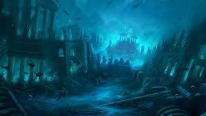

Desvende os Segredos das Profundezas Oceânicas
Debaixo da superfície azul dos oceanos existe um universo inexplorado — misterioso, silencioso e surpreendentemente vivo.
A milhares de metros abaixo do nível do mar, onde a luz do sol nunca chega, criaturas bizarras brilham no escuro, ecossistemas inteiros prosperam ao redor de fontes hidrotermais, e ruínas submersas sussurram histórias do passado.
Menos conhecido do que a Lua, o fundo do mar ainda esconde 95% de seus mistérios. Cada nova expedição revela espécies nunca vistas, formações geológicas surreais e segredos que desafiam a imaginação.
Prepare-se para mergulhar em um mundo onde a realidade é mais fantástica do que qualquer ficção. Os segredos das profundezas estão esperando por você.